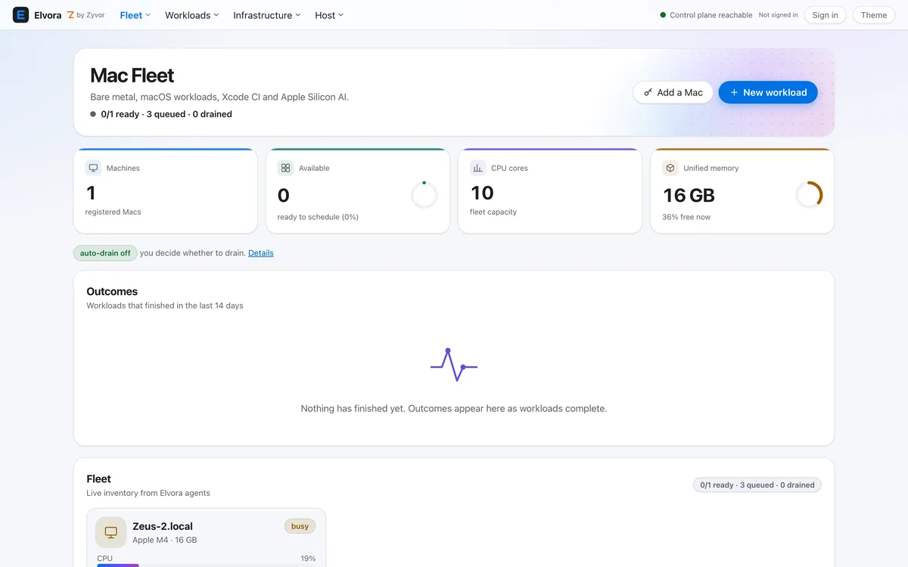
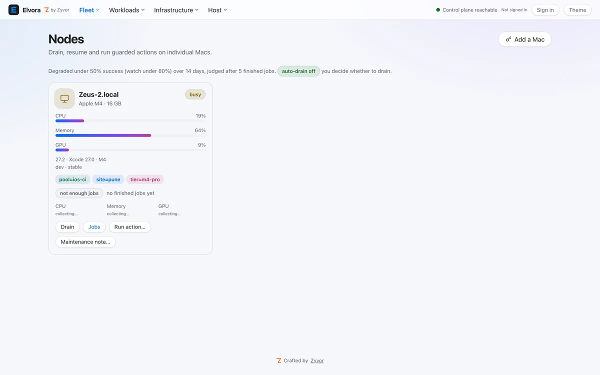
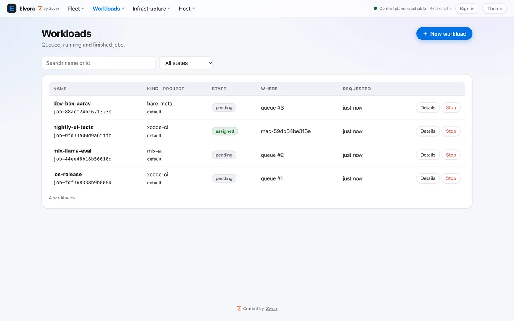
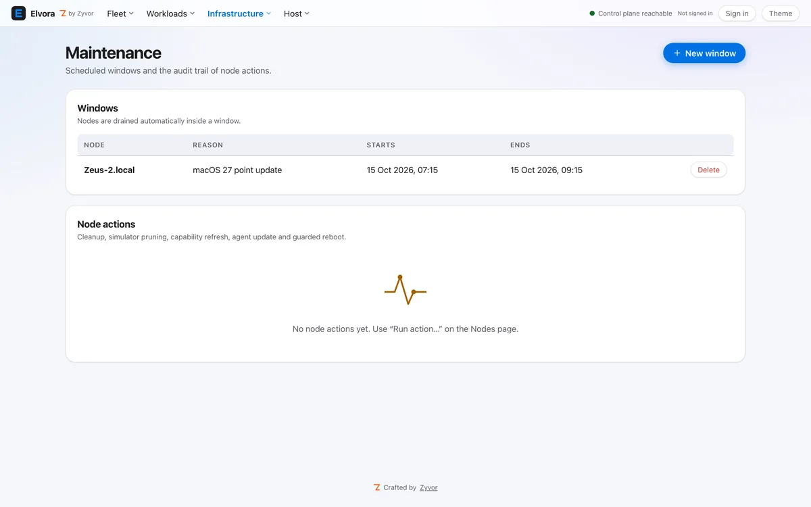

Zyvor · Apple fleet control plane
Elvora
The Apple infrastructure cloud.
Schedule Xcode CI, MLX, VMs and automation across your Macs. A control plane, an agent, a CLI and a menu-bar app turn fleets of Mac mini and Mac Studio systems into schedulable infrastructure. One active workload per Mac, no noisy neighbours.
Download the 30-day trialLearn more
The Mac app needs macOS 14 or later · Apple silicon · notarized · The app runs without a key. For a free 30-day trial key, email sales@zyvor.dev. The trial is soft: nothing is disabled and no data is lost.

A fleet should feel like infrastructure, not a spreadsheet of hostnames.
Whole-Mac scheduling, signed assignments and a security boundary that is spelled out.
Features
Fleet
Every Mac, live.
A native agent reports what each Mac really is, and the control plane keeps the inventory live: chip, memory, OS, Xcode and capabilities.
Install guide
Nodes
Know what each Mac is.
Labels such as site=pune, pool=ios-ci and tier=m4-pro. Online, busy and offline states, drain and resume with maintenance reasons, and an auditable queue of node actions.

Workloads
A scheduler that explains itself.
Filter on available memory, chip, GPU family and labels. An explainable score from free memory and utilization, priority queueing and automatic rescheduling.

Maintenance
Maintenance without surprises.
Reserve Macs for a time window, or take them out of placement for scheduled maintenance. Node actions cover cleanup, simulator pruning, capability refresh, agent update and a guarded reboot.

And the rest of the toolbox.
Four kinds of work
bare-metal, xcode-ci, mlx-ai and macos-vm, with runtime deadlines, bounded output capture, native exit codes and cancellation that stops the actual child process.
FluxVM for macOS VMs
The macos-vm kind uses a pluggable FluxVM or Virtualization.framework adapter. The agent download includes the FluxVM runner, which expects FluxVM 0.4.18 or later.
Built to operate
/healthz, /readyz, Prometheus-compatible /metrics, a Docker image, a launchd agent example, and elvoractl doctor to check local and server health.
A menu-bar app
Drag Elvora to Applications, or brew install --cask zyvorai/tap/elvora. It shows control-plane status from ELVORA_SERVER and ELVORA_API_TOKEN.
Security and control.
Signed assignments
HMAC-SHA256 signatures with expiry, node binding and a nonce. Single-claim and expiring.
Separate credentials
Agent and operator credentials are distinct, with optional viewer and admin RBAC tokens.
Audit trail
Event records carry the actor, and responses carry security headers.
Specs and requirements.
- Mac app requires
- macOS 14 or later
- Chip
- Apple siliconThe agent and menu-bar app are for Apple silicon Macs.
- Build
- Signed and notarizedDeveloper ID signed and notarized by Apple.
- Version
- 0.4.2The app runs without a key. For a free 30-day trial key, email sales@zyvor.dev.
- Control plane
- Go, standard library onlyLinux amd64 and arm64 builds are on the Releases page.
- Licence
- Per enrolled Mac, per yearCommercial licence. See Licence and pricing.
One honest limit
Elvora is a developer preview: a production-shaped control plane and agent, but not yet a hardened multi-tenant security boundary. Read SECURITY.md before deploying outside a trusted environment.
Get started in three steps.
Download
Get
Elvora-0.4.2.dmgand its.sha256checksum from the release page.Verify and install
Check the download with
shasum -a 256, open the DMG and drag Elvora to Applications. Orbrew install --cask zyvorai/tap/elvora.Point it at your control plane
The app reads
ELVORA_SERVERandELVORA_API_TOKEN. For the free 30-day trial key, write to sales@zyvor.dev.
Elvora 0.4.2 for Mac · SHA-256
4f564481baf595a5de4696666bc19305d513318359e4e232cee2fdcf8867467aVerify: echo "4f564481baf595a5de4696666bc19305d513318359e4e232cee2fdcf8867467a Elvora-0.4.2.dmg" | shasum -a 256 -c
Licence and pricing.
Elvora is not free to use. A commercial licence is INR 19,942 per enrolled Mac per year incl. GST (about US$201 excl. tax outside India). Start with a free 30-day trial key from sales@zyvor.dev.
Per enrolled Mac
One licence covers production use of one Mac enrolled in an Elvora fleet for twelve months. Licence each Mac you enroll. The control-plane host needs no separate licence if it only runs elvora-server and is not enrolled as a worker.
INR 19,942 per enrolled Mac per year incl. GST (about US$201 excl. tax outside India)
Prices: INR incl. 18% GST in India; US dollars excl. tax elsewhere (VAT, GST or sales tax added where applicable). Pay online by UPI, card or netbanking; international cards work (charged in rupees); or request a US-dollar invoice by bank transfer. Custom pricing: contact sales@zyvor.dev.
A licence does not cover redistribution of the binaries as your own product, source code, or macOS itself, which Apple licenses separately. Several Macs or a larger rollout: sales@zyvor.dev. Licensing in plain words.
Questions, answered.
Is there a free trial?
Yes: a free 30-day trial key from sales@zyvor.dev. It is a soft trial: nothing is disabled and no data is lost when it ends.
Which macOS versions?
The Mac app requires macOS 14 or later, on Apple silicon.
Will macOS warn me when I open Elvora?
The download is signed with our Developer ID. Notarized by Apple; macOS shows its standard first-open confirmation for apps downloaded from the internet. Verify the checksum on the release page if you like. See the install guide.
How is it licensed?
Per enrolled Mac, per year: INR 19,942 incl. GST in India (about US$201 excl. tax elsewhere). The control-plane host needs no separate licence if it only runs elvora-server and is not enrolled as a worker.
Is it ready for production?
It is a developer preview: production-shaped, but not yet a hardened multi-tenant security boundary. Read SECURITY.md before deploying outside a trusted environment.
How do I install the agent and CLI?
With Homebrew on Apple silicon: brew install zyvorai/tap/elvora. Tarballs, including Linux builds of the control plane, are on the Releases page.
Where is the source code?
The Elvora source code is private. This repository publishes the website, documentation and installers only.